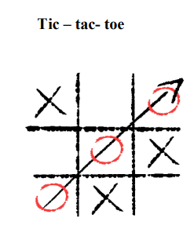
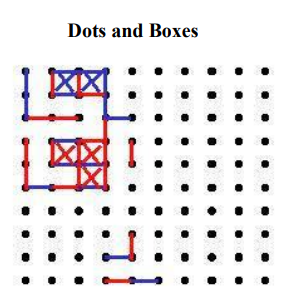

Section-1
Tic Tac Toe
The simple game of tic-tac-toe is a two-player game of Xs and Os. Play begins with nine spaces on a paper created by crossing two perpendicular sets of two parallel lines. One player begins (take turns being the first player) by placing an X in one square. The next player draws an O in another square. The game continues until there are three Xs or Os in a row or all squares are filled–a draw game, also called cat’s.
Dots and Boxes
Remember the time it took to form an array of dots across the page? To play Dots, you need a square of dots on the page (start with 6×6 and challenge your kids to go up to 30×30 or more). Once the square is created, players (2 or more) take turns with a different color pen creating line segments between dots. When a player forms a square with their line, they may put their initial in that square and play again. The game continues until all the lines between the dots have been drawn.
Section-2
- Rules for Tic-Tac-Toe
- 1. The game is played on a grid that's 3 squares by 3 squares.
- 2. You are X, your friend (or the computer in this case) is O. Players take turns putting their marks in empty squares.
- 3. The first player to get 3 of her marks in a row (up, down, across, or diagonally) is the winner.
- 4. When all 9 squares are full, the game is over. If no player has 3 marks in a row, the game ends in a tie.